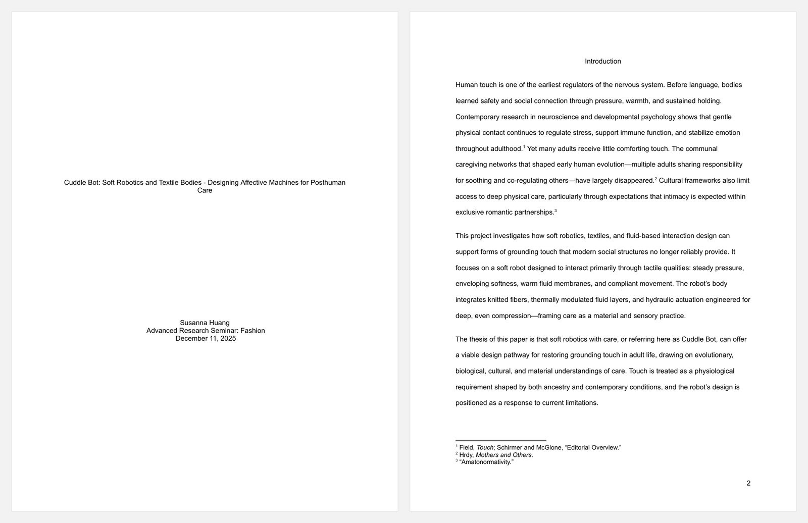
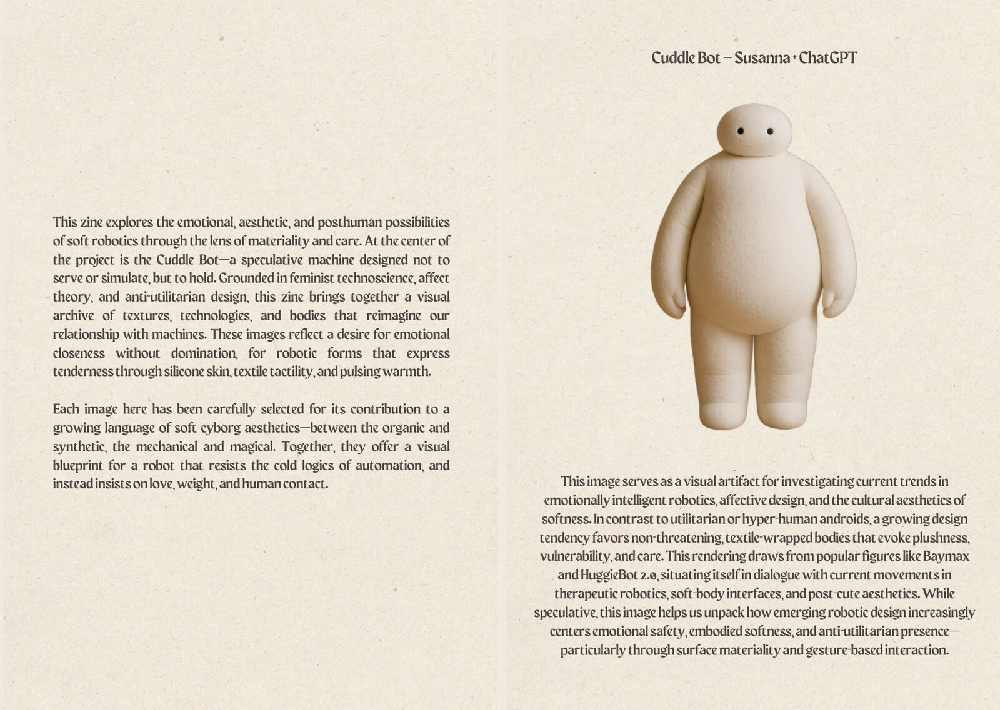
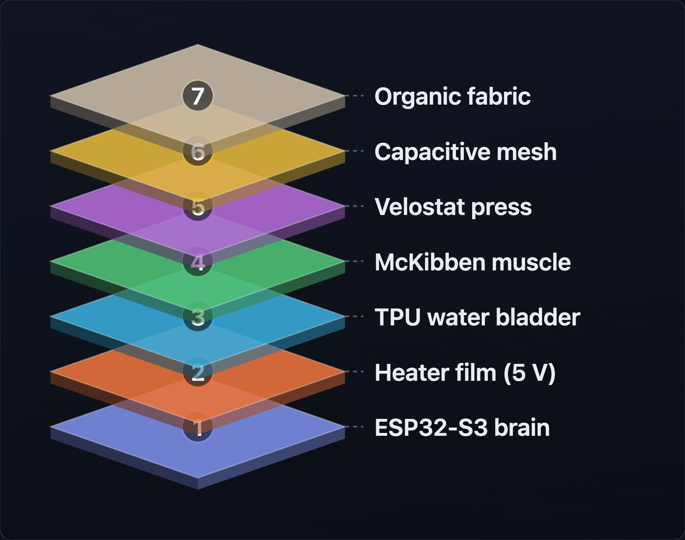

Soft robotics & textile bodies.
I call all my bots Mittens. First the eyes and ears, a wearable pendant. Then a soft healthcare robot — warm, with a fluid skin that responds to touch — that does the caring. Cuddle Bot is the research behind it: a machine designed not to serve or simulate, but to hold. Warm Skin v1 is its first piece of body, being built by hand now.
Grounding touch — steady pressure, warmth, an enveloping hold — regulates the nervous system, yet adult life rations it through romantic partnership alone. The paper names that limit amatonormativity and argues that soft robotics, designed with care, can give grounding touch back to anyone who needs it. Advanced Research Seminar: Fashion, December 2025.

Before any parts, a zine: textures, technologies, and bodies toward a soft cyborg aesthetic — between organic and synthetic, mechanical and magical. Feminist technoscience and posthuman theory set the brief: emotional closeness without domination, softness as a design material instead of a finish.

A palm-sized skin in seven layers: organic fabric, a capacitive mesh that feels a hand before it lands, a Velostat press layer, a McKibben fluid muscle, a heat-sealed TPU water bladder for weight and warmth, a 5 V heater film, and an ESP32-S3. It is meant to answer approach, touch, stroke, and hold with warmth, and a breath that slowly syncs to yours — attunement as a form of love. Parts are being ordered and the build starts Oct 2026; the demo video is in progress.
